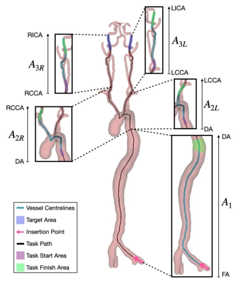
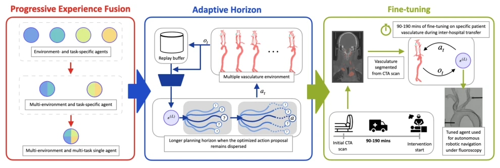
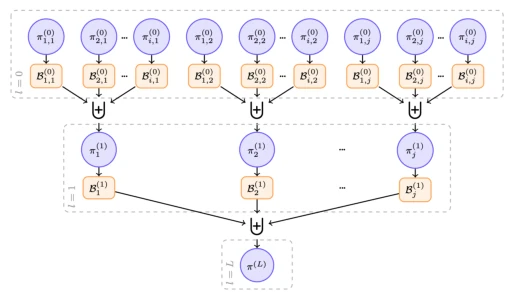
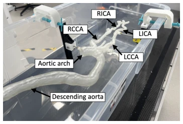
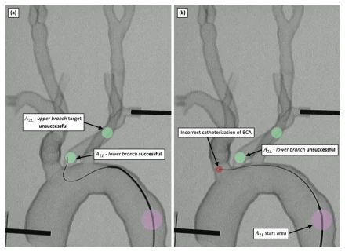
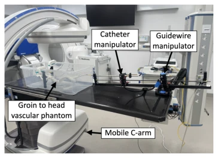
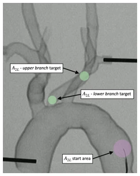
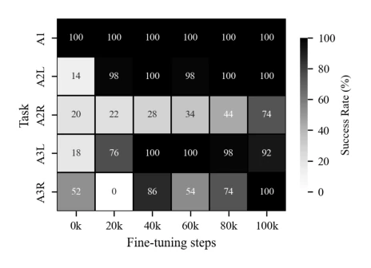
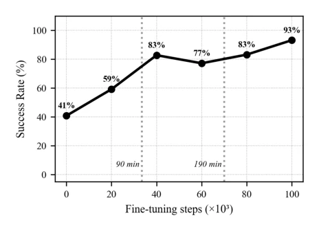
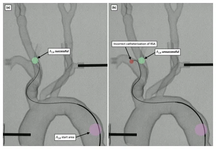

This paper attempts to employ "Progressive Experience Fusion" (PEF) to address the pain point of multi-task generalization in vascular navigation, essentially finding a new application for World Model in the field of medical robotics. PEF layers and packs single-task experiences for fusion, ultimately training a "generalist" controller, which outperforms SAC and basic TD-MPC2, a point worth noting. However, the in vitro experiment only ran a single phantom; although fluoroscopy was used, the sample size is too small, making the claim of "first time" somewhat of a stretch, given that similar works existed previously. Adaptive horizon is a clever strategy that reduces residual distance, but the computational overhead is not detailed. The fine-tuning part is quite clinical, utilizing transport time, but 40k steps correspond to 107 minutes, raising the question of whether doctors can accept this time cost. In summary, the Proof of Concept (PoC) is executed well, but there is still a distance from clinical deployment; do not rush to overstate.
The burden of ischemic stroke is increasingly heavy; mechanical thrombectomy (MT) is the standard therapy, but limited by geography and transport time, many patients cannot obtain it timely [1], [2]. Existing autonomous navigation research is mostly in simulation or simple in vitro models, making it difficult to cope with complex long-horizon tasks [22], [23]. Reinforcement learning (RL) is sensitive to architecture, making it difficult to generalize over long time horizons and multiple anatomical structures [25], [26]. Although World Models (such as TD-MPC2) perform better than SAC [30], [31], they lack validation on unseen anatomical structures [33]. Existing work has not solved the problems of unified multi-task training and cross-anatomical structure transfer, leading to difficulties in scalable deployment.

Fig. 2: Navigation tasks investigated. A target was randomly sampled from the set of points within the task finish area, while a guide catheter and guidewire navigated to it from a randomly sampled point in the task start area. DA: descending aorta, LCCA: left common carotid artery, LICA: left internal carotid artery, RCCA: right common carotid artery, RICA: right internal carotid artery.
The core is the Progressive Experience Fusion (PEF) framework, adopting a hierarchical pyramid structure to fuse experience replay buffers. The bottom layer (l=0) trains a single-task, single-anatomy agent; the first layer (l=1) fuses cross-anatomy experience by task to train task experts; the second layer (l=2) fuses cross-task experience by anatomy to train a general agent. The controller is based on the TD-MPC2 world model, utilizing MPPI for planning. Innovations include: 1) Adaptive planning horizon, dynamically adjusting the search range based on the residual dispersion of MPPI action sequences to avoid falling into local optima; 2) A clinical-driven fine-tuning stage, utilizing patient transport time to fine-tune the strategy in specific anatomy simulations without modifying hyperparameters. In terms of data flow, experience is passed level by level from single-task to multi-task and single-anatomy to multi-anatomy, ultimately achieving cross-anatomy generalization.

Fig. 1: Study overview. Progressive Experience Fusion (PEF) organizes replay data in two stages: experience is first grouped across vascular geometries within each navigation task and is then grouped across tasks to train one multi-task TD-MPC2 controller. At run time, TD-MPC2 evaluates candidate action sequences in its latent dynamics model using Model Predictive Path Integral (MPPI) planning. The adaptive horizon heuristic increases the planning horizon when the final MPPI action- sequence proposal remains dispersed. The generalist agent is fine-tuned in silico using time-limited patient-specific interaction prior to intervention, enabling adaptation to previously unseen vascular anatomies without modifying hyperparameters.

Fig. 5: Illustration of the Progressive Experience Fusion (PEF) process. Each agent at layer l > 0 is initialized from the fused post-training replay buffers of its assigned agents at layer l−1 and is subsequently trained across the combined configuration set. Its updated post-training replay buffer is then passed to the next fusion layer, culminating in the generalist policy π(L).
The experiments are divided into five parts: 1) Train10-Test0 simulation verifies PEF outperforms SAC (74% vs 37%) and Base TD-MPC2 (65%); 2) Train10-Test0 vascular phantom in vitro verifies domain transfer; 3) Train30-Test10 simulation generalization test (30 training, 10 unseen), adaptive horizon improves PR; 4) Unseen anatomy simulation fine-tuning, 40k steps improve SR to 83%; 5) Unseen in vitro vascular navigation, PR improves from 63% to 80% after fine-tuning. Baselines compare SAC and TD-MPC2. Metrics include Success Rate (SR), Path Ratio (PR), and Time Cost (PT). Findings indicate PEF is significantly superior to SAC on long-horizon tasks, adaptive horizon improves performance on difficult tasks (A2L), and fine-tuning is crucial for unseen anatomy.

Fig. 3: In vitro 3D vascular phantom with labeled anatomy.

Fig. 9: Vessel model under fluoroscopy, showing (a) successful navigation of A2L - lower branch, and (b) unsuccessful navigation of A2L - lower branch due to catheterization of the BCA (Brachiocephalic Artery).
其他图片Other Figures

Fig. 4: In vitro testbed showing the 3D vascular phantom, mobile C-arm, and robotic manipulator.

Fig. 6: Phantom vessel model under fluoroscopy, showing task start area and target locations for A2L - lower branch and A2L - upper branch. Expert neurointerventionalists typically use an access catheter with an extreme shape (Simmons catheter) for this maneuver – this task can be considered a superhuman experiment [33].

Fig. 8: Heatmap of individual task success rate vs number of fine-tuning steps for a single in silico vasculature using PEF and an adaptive horizon. 20×103 fine-tuning steps ≈54 min.

Fig. 7: Plot of mean task success rate vs number of fine- tuning steps for a single in silico vasculature using PEF and an adaptive horizon. Training times in relation to key times are highlighted: 90 min = 34×103 steps, 190 min = 70×103 steps

Fig. 10: Vessel model under fluoroscopy, showing (a) success- ful navigation of A2R, and (b) unsuccessful navigation of A2R due to catheterization of the RSA (Right Subclavian Artery).